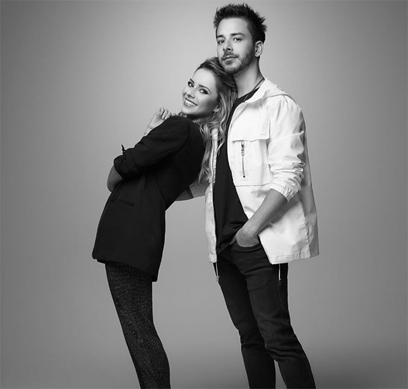
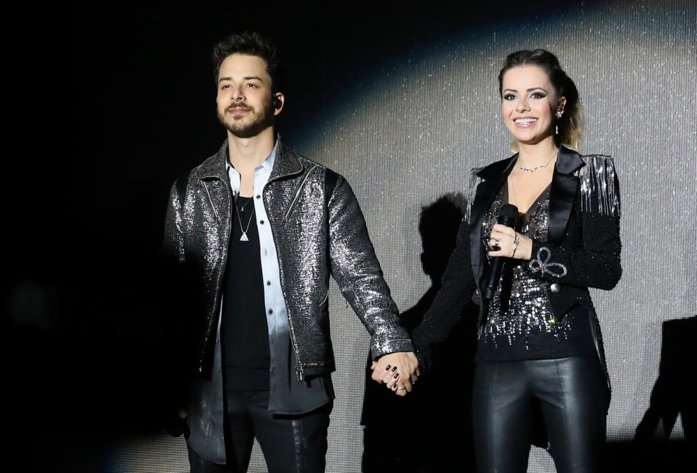
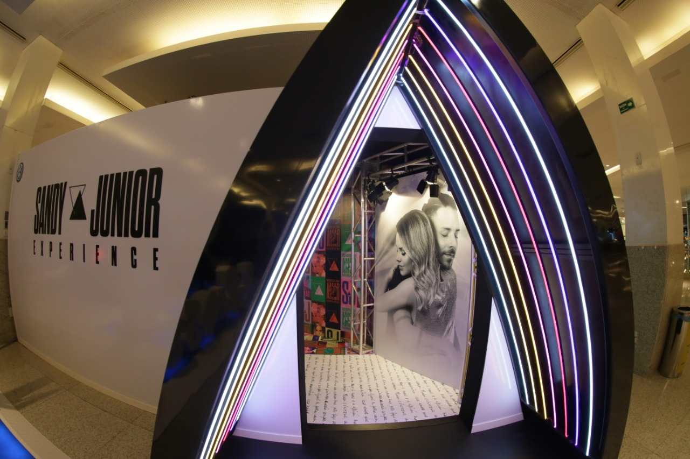

A história
Sandy e Junior é uma dupla música pop do Brasil, formada pelos irmãos Sandy Leah Lima e Durval de Lima Junior. Sandy e Junior fizeram sua primeira performance televisionada no programa Som Brasil, da Rede Globo, em 1989. Na época, eles eram mais conhecidos por serem os filhos do cantor sertanejo Xororó, que sugeriu ao então apresentador do Som Brasil, Lima Duarte, uma participação de seus filhos no programa. A apresentação de "Maria Chiquinha" foi recebida com entusiasmo e o áudio da apresentação foi retirado da televisão e começou a tocar em emissoras de rádio. Alguns empresários e gravadoras entraram em contato com o escritório de Xororó e, embora resistentes no início, devido à idade de Sandy e Junior, Xororó e a empresária e produtora Noely Pereira, mãe dos cantores, permitiram que eles assinassem um contrato com a PolyGram.Em meados da década de 2000, os irmãos também se dedicaram a projetos paralelos, o que indicava a existência de algumas divergências com relação à direção artística que o duo queria tomar. A própria dupla afirmou que existiam tais divergências, mas que, em seus discos, eles conseguiam combinar seus gostos musicais. Em abril de 2007, eles anunciaram o fim das atividades em dupla, lançando, em agosto, o registro ao vivo Acústico MTV, em CD e DVD.
Nossa História
Turnê 2019
O jornal Extra noticiou, em janeiro de 2019, que Sandy e Junior fariam alguns shows em comemoração aos 30 anos do início de suas carreiras. Em 13 de março, aconteceu uma coletiva de imprensa em São Paulo, onde a dupla e os patrocinadores revelaram detalhes sobre a turnê. Durante a coletiva, Sandy e Junior também frisaram que a turnê comemorativa não representa uma volta definitiva da dupla, mas apenas um projeto pontual. Em 2 de abril de 2019, eles realizaram um pocket show em São Paulo durante um evento de uma das patrocinadoras da turnê, a Volkswagen.Nossa História foi a nona turnê da dupla brasileira Sandy & Junior. A turnê marca o reencontro da dupla doze anos após sua última série de shows, Acústico MTV, que se encerrou no final de 2007. A reunião foi anunciada em março de 2019 e comemora os 30 anos da primeira apresentação televisionada dos cantores, que aconteceu em 1989.
Com início em julho e encerramento em novembro de 2019, Nossa História teve como intuito reproduzir os grandes concertos da dupla, com estruturas de palco elaboradas, corpo de balé e coreografias, bem como revisitar boa parte de seu repertório. Os ingressos começaram a ser vendidos no dia 20 de março apenas para clientes do cartão Elo. A partir de 22 de março, foi aberta a venda para o público geral. Após esgotar em menos de 24 horas todos os ingressos da turnê, a dupla anunciou mais dois shows extras, um em São Paulo e outro no Rio de Janeiro. Com a alta demanda por ingressos, novas datas foram anunciadas posteriormente.Algumas datas de show tiveram seu local alterado para que pudessem comportar mais espectadores.
APRESENTAÇÕES


Exposições
A mostra que reúne o acervo dos 30 anos de carreira da dupla Sandy e Junior foi ampliada e recebeu peças inéditas especialmente para a versão na cidade natal dos cantores, Campinas (SP). Aberta nesta quinta-feira (16), a exposição gratuita apresenta como novidades os figurinos da turnê 'Nossa História', que percorreu 12 capitais em 2019, e o telão com uma mensagem dos artistas aos fãs que já emocionou os primeiros visitantes.Dentre os cerca de 200 itens, 'Sandy & Junior Experience' apela para fotos, discos, bonecas, os primeiros instrumentos da dupla, jogos e outros produtos, além de cartas e mimos enviados por fãs para aguçar a as histórias com o público. A experiência é visual e quase olfativa, já que um frasco do perfume vendido com o nome da dupla rememora a memória olfativa.